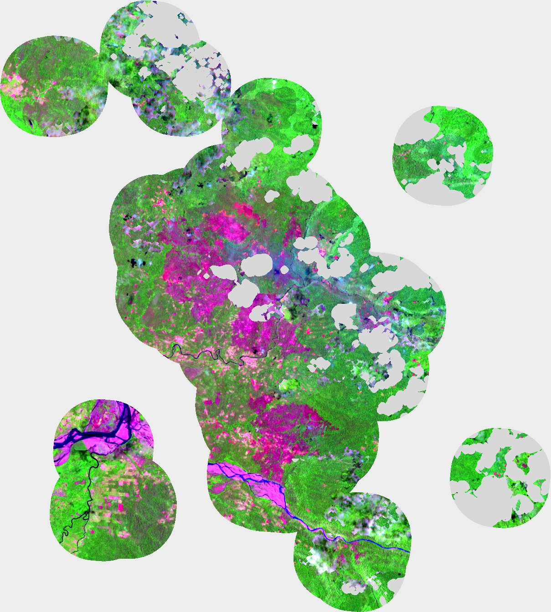
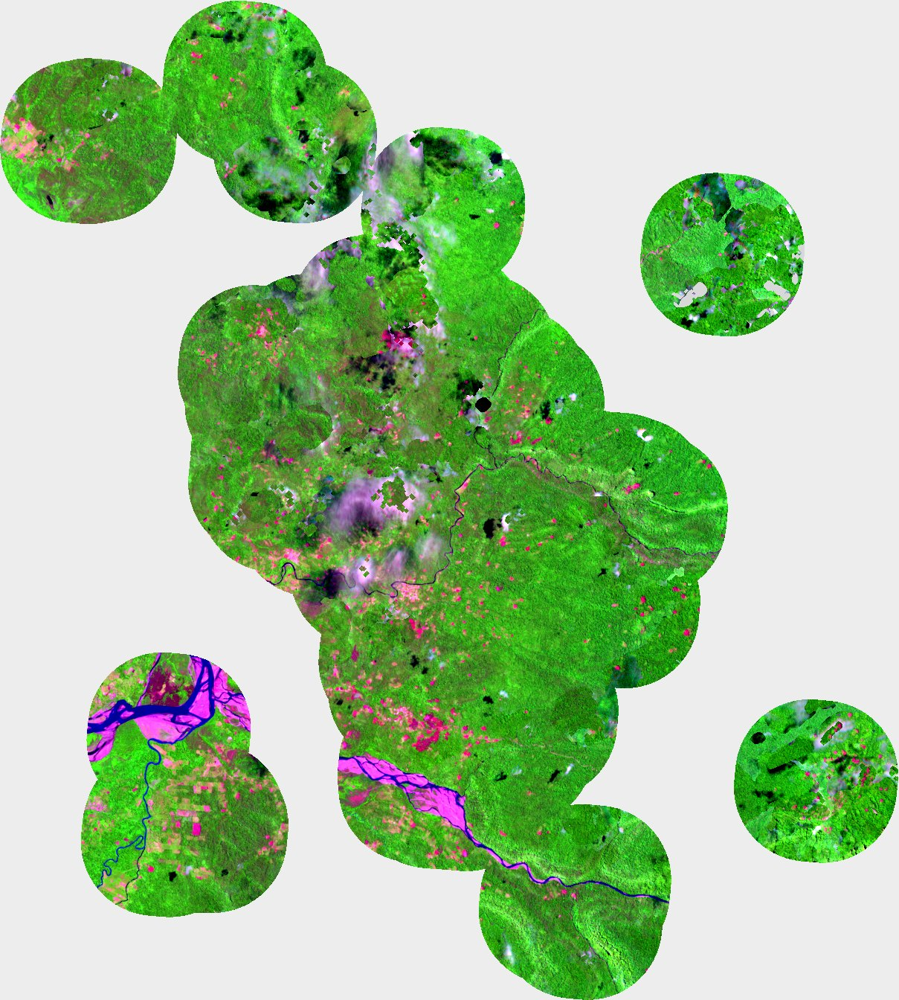
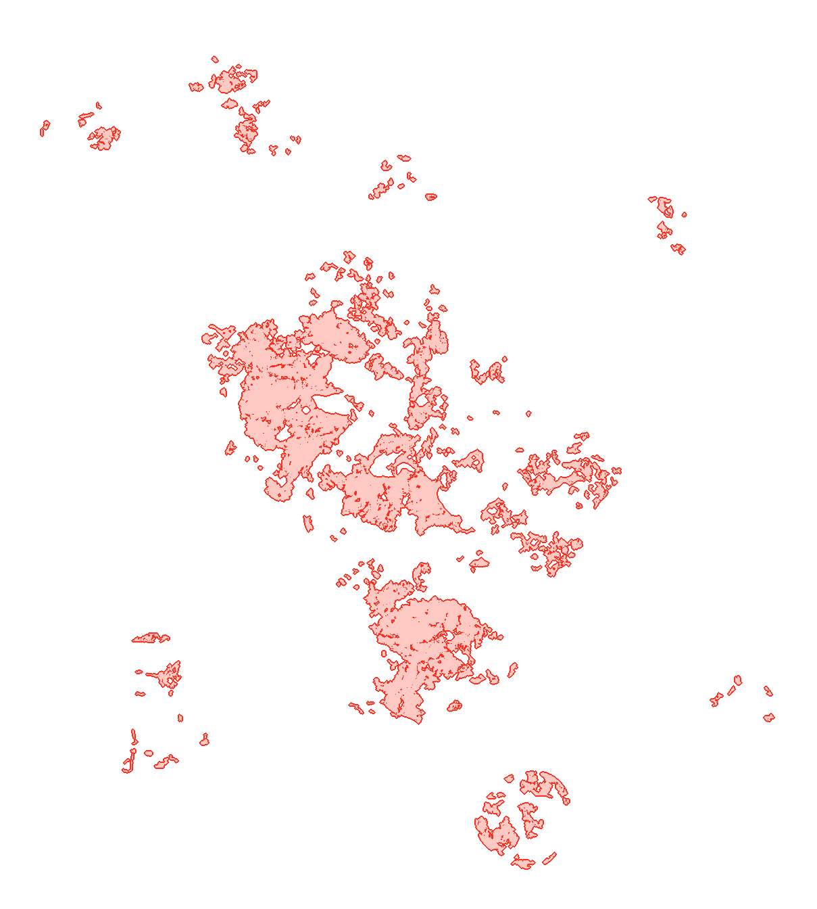
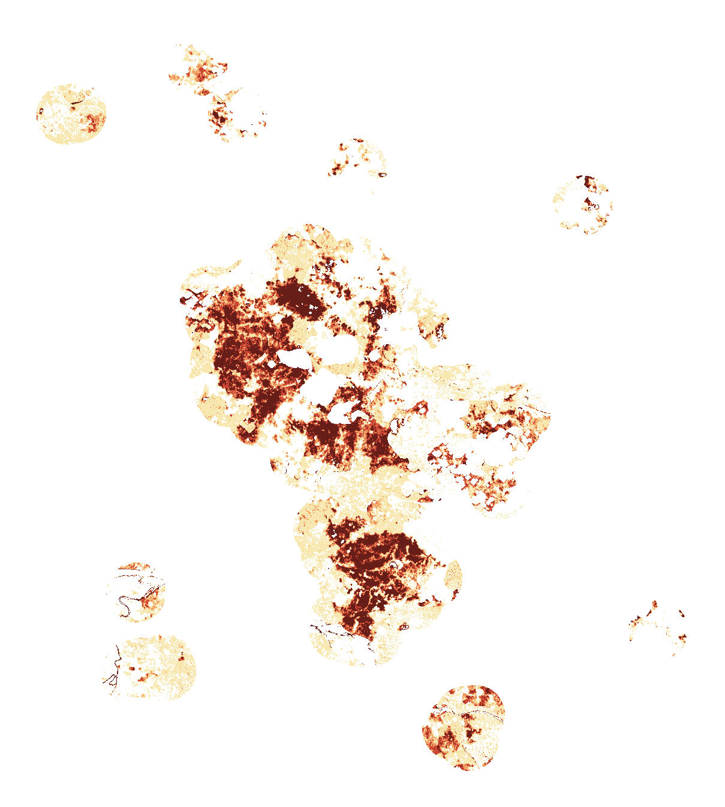

Los incendios del Perú en el último mes: qué cobertura había donde ardió, cuántas edificaciones estaban cerca, a qué distancia quedaba la compañía de bomberos más cercana y qué hicieron el Estado y la sociedad civil en Río Tambo, el incendio más grande de la última semana.
Cada círculo es un incendio con huella de 100 ha o más; su tamaño es la huella. Acerque el mapa para ver la forma real de la zona con fuego, o toque un incendio para ir directo a él. Las barras de la derecha filtran el mapa.
Rueda o dos dedos para acercar · arrastre para moverse
La composición se mide sobre la huella (los píxeles de 375 m con fuego), con la cobertura de ESA WorldCover 2021. El área quemada exacta solo se midió en Río Tambo.
| # | Lugar | Huella | Fechas | Cobertura principal | Edificaciones a 1 km | Distancia a bomberos |
|---|
Fue el incendio más grande de la última semana; en el mes completo, el más extenso fue el de Curahuasi, que se midió en clase. Empezó el 4 de octubre en la comunidad nativa de Tsyapo (COEN-INDECI; los satélites lo ven ese día a las 13:38) y se extendió hacia Cutivireni, Tincareni y Alto Cobeja. Área quemada con dNBR de Sentinel-2: compuesto «antes» del 15 de septiembre al 3 de octubre y «después» del 13 al 21 de octubre, tomando en cada píxel la imagen sin nubes más reciente.




Antes DespuésEn línea recta. Según el COEN llegaron bomberos de Oxapampa, Huancayo, Pucallpa y Lima, con apoyo aéreo desde Mazamari.
Cronología del reporte complementario n.º 14680 del COEN-INDECI (21/10/2026, 17:05 h) y daños oficiales al 20 de octubre. Arriba, los focos VIIRS por día en el complejo de Río Tambo.
La ONG Perú Pendiente juntó donaciones en octubre y compró equipos para ocho comandancias departamentales del Cuerpo General de Bomberos. Datos de su rendición de cuentas en Instagram (@perupendiente), transcritos a mano. Toque una región para ver qué se compró.
Unidades sumadas de las ocho comandancias. Los cascos forestales de tres tipos van juntos.
Departamentos con más huella en el último mes. La ONG trabaja con las comandancias de bomberos, y en la Amazonía (Ucayali, Loreto) gran parte del fuego son quemas agrícolas lejos de cualquier compañía.